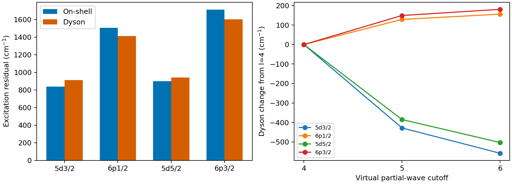

2026-10-08。计算软件：Atomx。承接上一轮定位与修复，原始基线、失败记录和已发送文件保持封存。
本轮补上了二阶自能随能量变化的求值接口、不可变极点快照以及与 DF 态连续相接的标量 Dyson 求根，并将求出的五个单体能移实际注入原生 CI。固定核、轨道和空间后，可直接测出这项自洽响应，而无需依赖实验调参。
当前四条激发能的 5% 实验目标未通过，最大相对误差为 5.268%。ℓ≤4 扩到 ℓ≤6 后，四条激发能仍变化 -558.38, +156.16, -503.18, +180.89 cm⁻¹（依次为 5d₃/₂、6p₁/₂、5d₅/₂、6p₃/₂），1 cm⁻¹ 分波收敛门未通过。本轮是完成了一项可复算的模型修复，当前结果仍有空间及高阶相关误差。能量自洽对四条激发能的最大响应为 110.05 cm⁻¹，与保留的千 cm⁻¹ 量级残差相比，这一项不足以解释主偏差。
137 项相关测试通过，27 条警告来自上一轮保留的未覆盖轨道 QED 解析估算告警。所有新计算均为纯 Dirac–Coulomb，不将这些 QED 估算混入结果。
上一轮算的是 E_on = ε_DF + Σ₂(ε_DF)。本轮保持参考轨道及全部内部能量固定，求解 E_Dyson = ε_DF + Σ₂(E_Dyson)。因此只改变外部能量变量，不重建电子密度或 Fock 场。它和含 QED 的轨道 SCF、非对角 Brueckner 轨道优化、全 Green 函数 GF2、耦合簇高阶屏蔽属于不同计算。
闭核以 68 电子 [Xe]4f¹⁴ 为参考，外部价电子不加入闭核占据。19 个占据径向轨道全部参加，虚轨道保留束缚态和低于 50 Ha 的全部正能态，完整 ℓ≤6 含 13 个 κ 块，实际 861 个虚轨道；无生效的根数截断。核为 Z=70 的经验 Fermi 模型，径向基为原封存 ns=123、ks=9、R≈60 a₀。DF 的既有径向控制不能自动作为自能径向收敛证明。
两种二阶图共同构成 Σ₂(w)=Σᵢ Wᵢ/(w−pᵢ)，其中 Wᵢ≥0。2p1h 图的 pᵢ=ε_r+ε_s−ε_b；2h1p 图的 pᵢ=ε_b+ε_c−ε_r。耦合仍来自 Atomx 的反对称 Coulomb 矩阵元和全部允许多极项，磁态平均约定保持不变。
在没有非零耦合极点的区间内，Σ₂′(w)=−Σᵢ Wᵢ/(w−pᵢ)²≤0，所以 f(w)=w−ε_DF−Σ₂(w) 严格递增。预声明主计算区间为 [ε_DF−0.1, ε_DF] Ha，要求包含 DF 能量、无极点且存在根，任何检查失败即拒绝。不能按实验最接近原则改选卫星根。权重 Z=[1−Σ₂′(E)]⁻¹ 必须位于 (0,1]。
这里的实数 Dyson 极点是冻结核单价电子附着能模型的准粒子根，不是此前 Ne 自电离复共振的检验，也不提供自电离宽度。标量求根会保留一类能量反馈，不能替代独立的第三阶图、屏蔽顶角及轨道响应。
以下修正和激发能单位为 cm⁻¹，均不含 Breit、QED、反冲和超精细项。
| 态 | 直接相加的自能 | 自洽根能移 | 自洽响应 | Z |
|---|---|---|---|---|
| 6s_1/2 | -8129.55 | -7983.47 | +146.08 | 0.982394 |
| 5d_3/2 | -8603.53 | -8383.73 | +219.80 | 0.974775 |
| 6p_1/2 | -4263.57 | -4212.75 | +50.82 | 0.988249 |
| 5d_5/2 | -7649.65 | -7462.54 | +187.12 | 0.975795 |
| 6p_3/2 | -3539.20 | -3503.17 | +36.03 | 0.989940 |
激发能统一减去各自空间和算法下的 6s 基态；最后一列为自洽相对直接相加的跃迁变化。
| 上态 | 实验 | 直接相加 | 自洽求根 | 自洽−实验 | 自洽响应 |
|---|---|---|---|---|---|
| 5d_3/2 | 22960.80 | 23798.59 | 23872.31 | +911.51 | +73.72 |
| 6p_1/2 | 27061.82 | 28568.40 | 28473.14 | +1411.32 | -95.26 |
| 5d_5/2 | 24332.69 | 25232.04 | 25273.08 | +940.39 | +41.04 |
| 6p_3/2 | 30392.23 | 32103.42 | 31993.37 | +1601.14 | -110.05 |
实验参考沿用原报告封存的 NIST Yb II 数据，没有更新或拟合参考值；自然同位素、核模型及超精细平均的差异尚未形成精密误差预算。
下表通过保留极点的原始虚轨道角动量和最大虚轨道能量进行精确过滤。5/20 Ha 窗口总包含负能的束缚虚轨道；每个窗口重新求上下态的根。耦合权重没有按大小截断。
| ℓ 上限 | 虚轨道能量上限/Ha | 5d₃/₂ | 6p₁/₂ | 5d₅/₂ | 6p₃/₂ |
|---|---|---|---|---|---|
| 4 | 50 | 24430.69 | 28316.98 | 25776.26 | 31812.48 |
| 5 | 50 | 24002.30 | 28445.99 | 25390.95 | 31961.64 |
| 6 | 5 | 23867.15 | 27892.41 | 25139.59 | 31323.30 |
| 6 | 20 | 23810.58 | 28358.84 | 25213.48 | 31859.43 |
| 6 | 50 | 23872.31 | 28473.14 | 25273.08 | 31993.37 |
各图按其中最大虚轨道能量分组后，得到下列单态自能贡献。这些组之间无重叠，但它们的数值不是缺失 >50 Ha 尾部的误差上界，不能据此宣布高能尾部收敛。
| 态 | 全束缚虚轨道 | 0–5 Ha | 5–20 Ha | 20–50 Ha |
|---|---|---|---|---|
| 6s_1/2 | -2609.11 | -4230.68 | -929.17 | -214.50 |
| 5d_3/2 | -55.51 | -7181.45 | -993.91 | -152.86 |
| 6p_1/2 | -1593.33 | -2069.79 | -452.05 | -97.58 |
| 5d_5/2 | +176.75 | -6625.03 | -859.38 | -154.88 |
| 6p_3/2 | -1251.43 | -1793.27 | -380.90 | -77.57 |
下一项有判别力的检验是保持同一核，分别扩展正能上限、高分波和径向自能表示；随后比较非对角轨道响应与高阶屏蔽。只扩大轨道空间或只迭代外部能量，都无法证明另一项已经充分包含。

新入口位于 mbpt_transitions.py。旧的 mbpt2_orbital_energy_shift 默认行为保持在壳；显式 evaluation_energy_au 只改能量自变量。build_mbpt2_self_energy 保存原生精确非零权重和极点，返回 DiagonalSelfEnergy，其 solve_dyson 输出能量、能移、残差和权重。调用者必须提供覆盖核、态、哈密顿量、原生径向度量及虚空间的 reference_identity；不允许跨参考复用快照。
独立测试包括四种占据或外部 s/p/d 目标的在壳与离壳自旋轨道求和；解析导数与有限差分；两态厄米矩阵的本征值与本征矢物理分量，独立验证根和 Z；以及极点穿越、错误分支区间、非有限输入、负权重和快照不可变性。没有改宽此前的容差。
原空间在壳重放最大误差 4.850e-15 Ha（门 1e−10）；五态求根最大残差 6.939e-17 Ha（门 1e−10）。原生 CI 对求出的能移做完整单体密度注入，最大能量匹配误差 3.638e-12 Ha（门 1e−8），态匹配权重最低 1.000000。这验证能量注入，不认证新的辐射跃迁矩阵元或寿命。
完整捕获耗时 779.58 s，峰值 RSS 1138.2 MiB；线程为 1，预声明资源上限 1000 s。机器负载已保存，时间仅为本次非受控观测，不作为性能倍数。计算期间生产源码 SHA 未改变。
契约、输入和实际脏源码 SHA、每态身份、精确极点 NPZ、原始日志、CI 残差及 CSV 均保存在本目录。完整极点留在 results/l6_e50_all，捕获源码为 Atomx_Dyson_source.zip，交付源码为 Atomx_Dyson_final_source.zip。捕获完成后增加了有限实数标量输入检查，拒绝把复能量静默转换成实数；最终源码重放五个实数根与捕获结果完全一致，独立测试也已更新。汇总复现包同时包含封存 DF 基线、所需公共加载器与旧在壳参考；按包内说明可从源码重新捕获全部极点，或在本地使用已保存极点立即重放。
运行顺序：
.venv/bin/python docs/yb_energy_dependent_sigma_2026_10_08/run_dyson.py
.venv/bin/python docs/yb_energy_dependent_sigma_2026_10_08/analyze_and_inject.py
.venv/bin/python docs/yb_energy_dependent_sigma_2026_10_08/build_report.py
驱动拒绝覆盖已有实验目录；重新运行时先在独立 checkout 中保留或移动原输出，不能删除原始科学证据来重跑。新源码使用独立 on/off-shell 及两态控制；其在壳部分对旧封存结果的匹配建立了两轮之间的源身份链。
物理依据：Porsev 等（2012）Yb⁺ 核相关有效哈密顿量；Safronova 等（2009）Yb II 二阶、三阶及全阶对照；PySCF 官方 AGF2 理论说明。本轮采用对角冻结轨道极点展开，并未实现这些参考中的完整全阶或 Green 函数迭代方法。